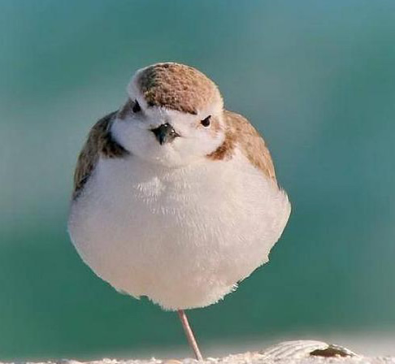

雪鸻（学名：Charadrius nivosus）：是鸟纲、鸻科的小型涉禽。全长约16.5厘米。羽毛的颜色为灰褐色至灰色，常随季节和年龄而变化。跗蹠修长，胫下部亦裸出。中趾最长，趾间具蹼或不具蹼，后趾形小或退化。翅形尖长，第1枚初级飞羽退化，形狭窄，甚短小；第2枚初级飞羽较第3枚长或者等长。三级飞羽特长。尾形短圆，尾羽12枚。
是迁徙性鸟类，具有极强的飞行能力。通常沿海岸线、河道迁徙。栖息地为沿海和内陆地区，通常是咸水体、生活环境多与湿地有关，离不开水。栖息于海滨、岛屿、河滩、湖泊、池塘、沼泽、水田、盐湖等湿地之中。分布于北美洲、中美洲、南美洲西部和加勒比地区。
曾经是环颈鸻的亚种之一，2014年划分为独立物种。